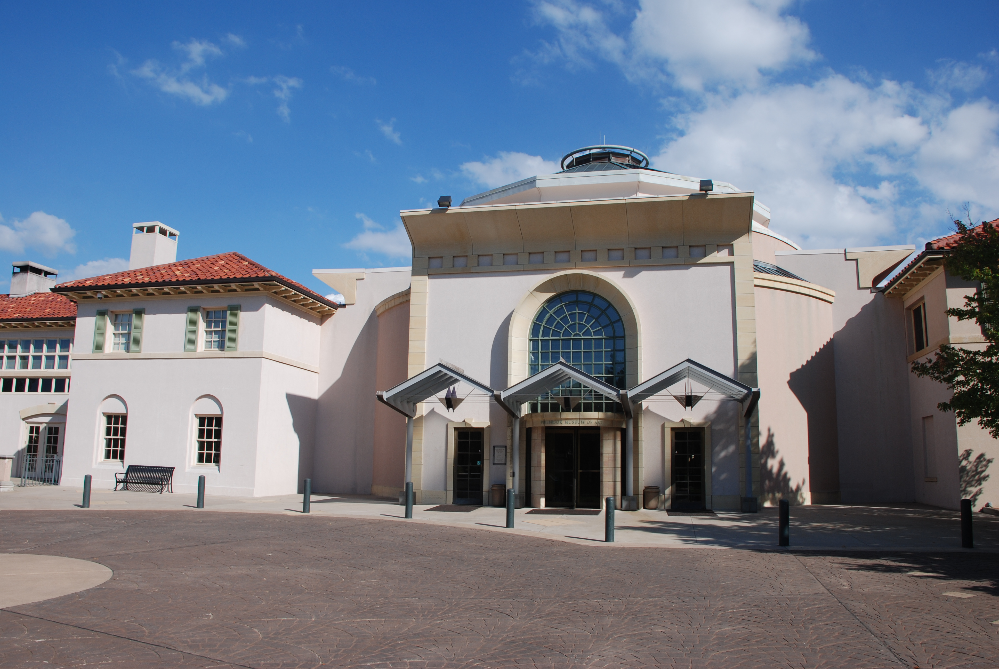
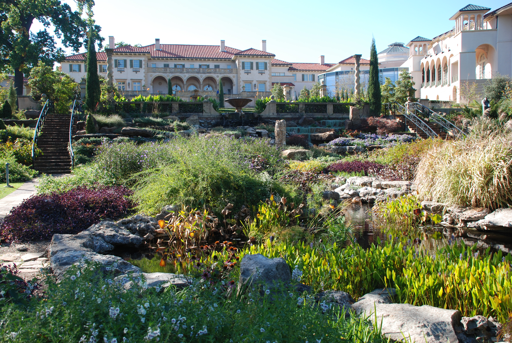
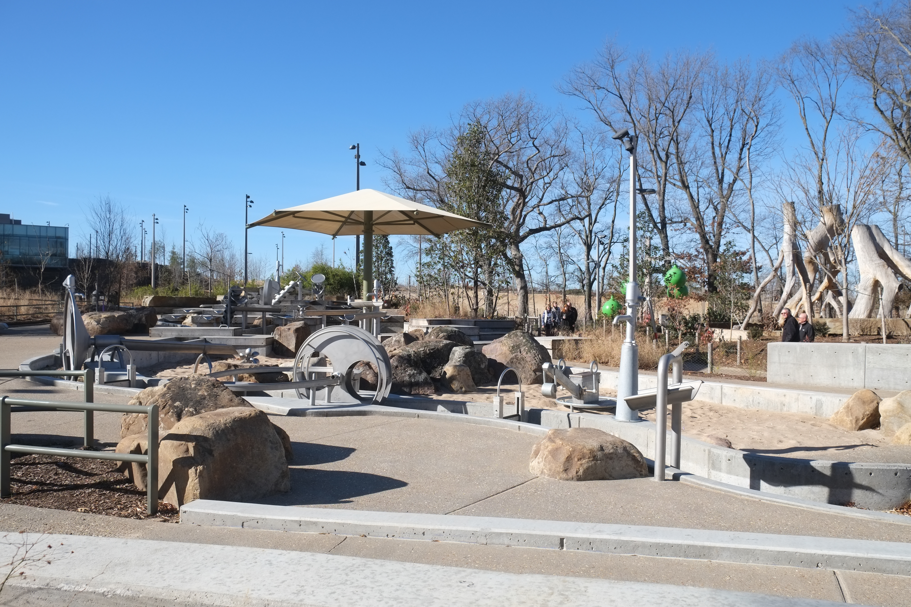

DATE NIGHT IDEAS FORQUEER COUPLESIN TULSASTOP DEFAULTING TO THE BAR
Spring is here. Tulsa has more to offer than you think.
April 8, 2026
◇
Tulsa Gays
🕒 6 min read·Published April 8, 2026·✓ Verified May 13, 2026

Photo: Adavyd / CC BY 4.0 (Wikimedia Commons) — Philbrook Museum of Art — a date night that actually impresses
There's nothing wrong with date night at the Eagle. Nothing wrong with a booth at Yellow Brick Road
with a couple of drinks and a good conversation. That's a perfectly fine evening and I mean that sincerely.
But if every date night looks the same, the bar (no pun intended) eventually stops feeling like a choice and starts feeling like the path of least resistance. Tulsa actually has substantially more to offer queer couples than the default, and a startling number of people who live here have never found it.
It's April. The weather is cooperating for roughly six more weeks before Oklahoma turns back into a furnace.
Use them. Here's a guide to date nights in Tulsa that are genuinely good, genuinely welcoming to LGBTQ+ couples,
and genuinely worth your time.
"The best date nights aren't about the venue. They're about actually paying attention to each other. But a good venue helps."
The Lineup
Artsy + Intimate
Circle Cinema + Dinner in the Brady Arts District
Circle Cinema is Tulsa's nonprofit, independent theater, and it's one of the most queer-comfortable
spaces in the city. They show films nobody else shows, host special screenings, and the entire crowd
tends to be the kind of people who are fine with whoever you're there with. Pair it with dinner at
one of the Brady Arts District restaurants beforehand and you've got a full evening.
Chimera Cafe, Andolini's, Juniper, and Roosevelt's on Cherry Street are all close and all welcoming.
Tip: Check their event calendar. They do themed screenings, outdoor films, and special events throughout spring that make it even better than a standard movie night.
Big Night Out
Drag Show at Club Majestic or Yellow Brick Road
If you or your partner has never been to a proper Tulsa drag show, fix that. Club Majestic and Yellow Brick Road
both host regular drag performances, and they're exactly as fun as they sound. The performers are talented,
the crowd is electric, and it's one of those nights where you end up laughing and cheering and having a genuinely
great time with strangers. It works for a first date, a tenth anniversary, or anything in between.
Tulsa's drag scene is no joke.
Tip: Get there early for a good table. Shows fill up, especially on weekends. Bring ones.
Outdoors + Free
Gathering Place at Sunset
The Gathering Place is legitimately one of the best urban parks in the country, and it's free.
Take your person there in the evening when the light is good and the temperature is bearable.
Walk the river trail, find a spot on the lawn, bring something to eat.
It's low-key, it's beautiful, and you can hold hands without a second thought.
That last part matters more in some places than others. In Tulsa's Gathering Place, it's not a moment.
It's just Tuesday.
Tip: The Champion Grill inside the park has food and drinks if you don't want to bring anything. Weekday evenings are far less crowded than weekends.
Cultural + Cool
Gilcrease Museum (Free on Thursdays)
Gilcrease has the largest collection of art and artifacts of the American West in the world,
and it sits on a hill with a view of the city that most Tulsans have never actually taken in.
Thursday evenings are free. Their ongoing UnCrease program runs through spring with live music,
performances, and interactive arts events, some by queer artists.
An art museum date sounds like it should be pretentious. Gilcrease manages to feel genuinely welcoming,
like the collection belongs to everyone who shows up.
Tip: Pair it with a drink at the Museum Cafe or head to Utica Square afterwards. It's a ten-minute drive and the dining options are excellent.
Bookworms + Wanderers
Magic City Books + The Pearl District
Magic City Books is Tulsa's beloved independent bookstore, and they're consistently LGBTQ+ affirming
in their programming and their collection. Browse together, buy each other one book without telling the other
what you picked until you're at dinner, then compare. It's the kind of game that tells you a lot about
how someone sees you. Walk the Pearl District before or after. Get coffee at Topeca.
It's a slow date in the best way.
Tip: Check Magic City's events calendar. They host author readings, LGBTQ+ book launches, and community nights on a regular basis.
Upscale + Worth It
Dinner at a Tulsa Restaurant That Earns It
Tulsa has restaurants that can hold their own against any mid-size American city, and people underestimate that.
Juniper is reliably excellent for a proper dinner out. Bodean's if you want the Tulsa institution experience.
McNellie's if you want gastropub with a beer list that'll take twenty minutes to read.
None of these places are going to make you feel like the odd couple. You're in Tulsa, not Mayberry.
Tip: Make a reservation anywhere with a table. Spring weekends fill up faster than people expect.
A solid Cherry Street bar with a younger, more progressive crowd and cocktails that don't disappoint.
Nobody's giving you a look here. The vibe is easy, the drinks are good, and it's the kind of place
that feels right for a date that's going well and you don't want to end yet.
Tip: Get there before 8pm on weekends if you want a good spot. It fills up.
The Honest Take on Dating in Tulsa
Tulsa is not a perfectly queer-friendly city in every corner and every context. That's just true.
But in the places that matter, in the neighborhoods and venues that have made a choice about who they welcome,
it's genuinely fine. Better than fine, actually. And that list of places keeps growing.

Photo: Adavyd / CC BY 4.0 (Wikimedia Commons) — The Philbrook garden at golden hour is one of Tulsa's genuinely great date moves
The city has changed a lot in the last decade. New restaurants opened by people who care about their community.
Cultural institutions that have figured out inclusion is good for attendance and good for the culture.
A Gathering Place that feels public in the best possible sense of that word.

Photo: Paul Sableman / CC BY 2.0 (Wikimedia Commons) — Gathering Place at sunset — free, beautiful, and deeply underrated as a date
You can have a genuinely excellent date night in Tulsa, and the only thing standing between you and that is making an actual choice about where to go instead of defaulting to the same two spots every time. This list is a starting point. The rest of it is execution.
Keep an Eye on What's Coming
Spring in Tulsa brings a lot of one-time events that make for unexpected perfect date nights.
Outdoor concerts, gallery crawls, festivals, special screenings. The kind of thing that's only happening
once and you'll hear about it at 11pm on a Thursday when it's too late to plan.
That's exactly why we run the weekly events guide. Check it every Monday.
We pull from 80+ sources, including everything from formal venue calendars to Facebook groups to Slack channels,
so you have the full picture of what's actually happening before the week gets away from you.
Photo: Jordan Michael Winn / CC0 (Wikimedia Commons) — Tulsa rooftop bars with this exact backdrop
You can also follow Oklahomans for Equality
for community events that don't always make it into the broader calendar, and
our Instagram for quick hits
when something good pops up mid-week.
"This city has more to offer than most people who live here realize. That's not a criticism. It's an invitation."
Make the reservation, go see the show, walk the river at sunset. Tulsa has more than enough to work with, and it's been waiting for you to take it seriously.